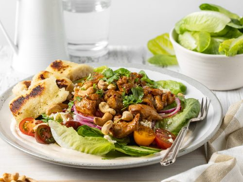

Butter chicken salad

Description
There's nothing quite like butter chicken - fragrant, spicy, warming and downright comforting. That's why we put it to our food team to come up with a healthy, low-carb version that tastes just as good without blowing your healthy eating streak.
Ingredients:
- ¾ cup (200g) Greek yoghurt
- 2½ tbs tandoori paste
- 1 tbs vegetable oil
- 2½ tsp garam masala
- 8 chicken thighs
- 1 red onion, thinly sliced
- Juice of 1 lemon
- ¼ tsp caster sugar
- 1 Lebanese cucumber, sliced into rounds
- 250g small truss tomatoes, halved
- 2 green chillies, thinly sliced
- 2 tbs chopped curry leaves (optional)
- 1 large bunch coriander, leaves picked
- ⅓ cup (50g) chopped roasted cashews
Steps:
- Combine ¼ cup (70g) yoghurt, 1½ tbs tandoori paste, 1 tbs olive oil and 2 tsp garam masala in a baking dish and set aside.
- Place 2 chicken thighs on a chopping board. Insert 3 skewers through the thighs, then cut parallel to middle skewer to create 3 separate skewers. Repeat to create 12 skewers. Transfer skewers to marinade and, using your hands, toss until completely covered. Set aside for at least 30 minutes (chill if marinading for longer).
- Preheat oven grill to high and place a shelf in a lower position in oven. Line a second baking dish, narrower than the length of the skewers, with foil. Place skewers across prepared dish so chicken sits above base of dish. Place under grill and grill for 10 minutes or until slightly charred, then turn and grill for a further 5-10 minutes or until just cooked through and slightly charred.
- Meanwhile, combine onion, lemon juice, 1 tsp salt, sugar and remaining ½ tsp garam masala in a bowl and toss to combine. Set aside until needed. Place cucumber, chilli, curry leaves, if using, and coriander in a bowl and set aside until needed.
- Combine the remaining ½ cup (140g) yoghurt and 1 tbs tandoori paste in a bowl, mixing with a spoon to create a swirl effect. Spread across serving plates. Add drained pickled onion to cucumber salad and toss until well combined. Arrange on serving plates. Add skewers to plates and drizzle over a little of the cooking juices. Scatter with cashews and remaining chilli to serve.
Source:www.delicious.com